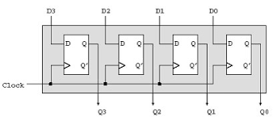

I registri
I registri della CPU sono piccole memorie super veloci super veloci dentro al processore.
Servono a memorizzare temporaneamente i dati e le istruzioni che la CPU sta usando, cosi da lavorare più velocemente. Ecco i tipi principali:
1.ACCUMULATORE:dove si fanno i calcoli.
2.CONTATORE DI PROGRAMMA:indica alla CPU dove andare per l'istruzione successiva
3.REGISTRO DI ISTRUZIONE:contiene l'istruzione che la CPU sta eseguendo.
4.REGISTRI GENERICI:piccoli "cassetti" per tenere i dati temporanei.
5.REGISTRO DI STATO:segnala alla CPU condizioni particolari,come errori.
6.STACK POINTER:indica l'ultimo dato nello "stack",in una zona di memoria speciale per le funzioni.
7.BASE POINTER:aiutaa trovare facilmente i dati nello stack.
In breve, questi registri aiutano la CPU a lavorare rapidamente e senza interruzioni.

Torna all'indice